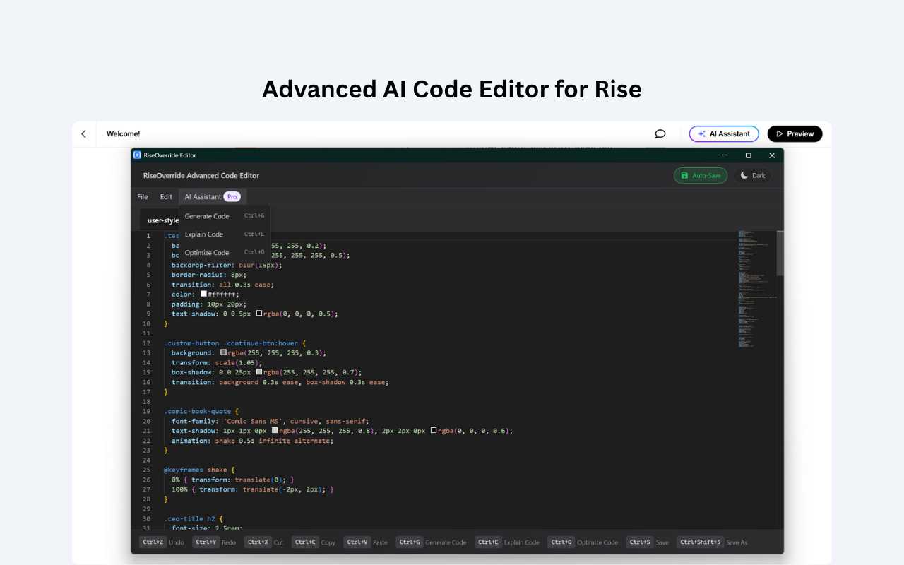

RiseOverride v1.6.0 Release: AI Code Tools, New Code Editor & Free JavaScript
Published on by Team @ Override Labs
RiseOverride v1.6.0 is here—and it's our most powerful update yet. We've added intelligent AI tools for Pro users, a completely redesigned code editor for everyone, and made JavaScript support free for all users. Plus, we've enhanced the automatic patching process with improved stability, user experience, and support for all Rise output formats (SCORM 1.2, SCORM 2004, xAPI, cmi5, and AICC).
AI-Powered Code Features (Pro)
Transform how you write and optimize code for your Articulate Rise courses with our new AI-powered tools. Whether you're a beginner or an expert, these features help you create better code faster:
- AI Code Generation: Write CSS or JavaScript using natural language prompts. Simply describe what you want, and our AI generates the code for you.
- AI Code Explanation: Understand what existing code does, line by line. Perfect for learning or debugging complex styling and interactions.
- AI Code Optimization: Improve and streamline your code instantly. Remove redundancy, improve performance, and follow best practices.
- Visual Code Selection Indicator: Know exactly what code segment is being analyzed with clear visual feedback.
- Unified AI Interface: A consistent, intuitive layout across both popup and editor views for seamless workflow.
- Keyboard Shortcuts: Speed up your workflow with Ctrl+G (Generate), Ctrl+E (Explain), Ctrl+O (Optimize)
New Code Editor (Free & Pro)
We've completely redesigned the code editor with a modern interface and enhanced functionality for all users:
- Modern Interface: Clean, intuitive design with better syntax highlighting and code formatting.
- Enhanced Code Intelligence: Improved autocomplete, error detection, and code validation.
- Better Performance: Faster loading and smoother editing experience, even with large code files.
- Dark Mode: Enjoy a comfortable coding experience with a fully integrated dark theme.
- Live CSS Preview in Rise: See your CSS changes instantly as you code in the Quick Editor or the Advanced Code Editor.
JavaScript Support Now Free
Full JavaScript support is now available to all users—unlocking powerful new possibilities for eLearning developers and instructional designers:
- Gamification Elements: Add points, badges, timers, progress bars, and leaderboards to boost learner engagement.
- Custom Interactions: Build interactive quizzes, drag-and-drop activities, dynamic feedback, and branching scenarios tailored to your course.
- Visual Effects: Celebrate learner achievements with confetti bursts, animated transitions, or custom pop-ups.
- Advanced Event Handling: Track user actions, trigger custom logic, and respond to learner choices in real time.
- API Integration: Connect your course to external data, web services, or learning analytics platforms for richer experiences.
Enhanced Automatic Patching (Free)
We've significantly improved the stability and user experience of our automatic patching process, now available to all users with support for all Rise output formats:
- All Output Formats Supported: SCORM 1.2, SCORM 2004, xAPI (Tin Can), cmi5, and AICC are now fully supported (previously only SCORM formats worked).
- Improved Stability: More reliable patching process with better error handling and recovery mechanisms.
- Enhanced User Experience: Clearer progress indicators, better feedback, and more intuitive workflow.
- Faster Processing: Optimized algorithms for quicker file processing and patching across all formats.
- Better Error Messages: More descriptive error reporting to help troubleshoot any issues.
- Automatic Recovery: Smart retry mechanisms for handling temporary failures.
- Universal File Validation: Improved checks to ensure files are properly processed and validated regardless of output format.
Why This Update Matters
RiseOverride v1.6.0 represents our biggest step forward in making Rise customization accessible and powerful for everyone. By making JavaScript free for all users, we're removing barriers to advanced customization. The AI tools help Pro users work faster and smarter, while the new code editor improves the experience for everyone.
These improvements are particularly valuable for:
- All Users: Now have access to full JavaScript capabilities and automatic SCORM patching
- Instructional Designers: Can create more sophisticated interactions without coding expertise
- Developers: Benefit from AI-powered tools and a more robust development environment
- Organizations: Enjoy more reliable patching and advanced customization options
Getting Started with v1.6.0
Ready to experience the new features? Here's how to get started:
- Update RiseOverride: The extension updates automatically, or reinstall from the Chrome Web Store
- Try JavaScript (Now Free): Open any Rise course and explore the full JavaScript capabilities
- Explore the New Code Editor: Experience the redesigned interface with enhanced features
- Test Automatic Patching: Export a course and experience the improved patching process
- Try AI Tools (Pro): Use the new AI features for code generation, explanation, and optimization
Install RiseOverride for free →
Reminder: To use your custom code in a published Rise course, patch your course export with RiseOverride. It's fast, automatic, and requires no manual edits. Now supports all Rise output formats: SCORM 1.2, SCORM 2004, xAPI (Tin Can), cmi5, and AICC.